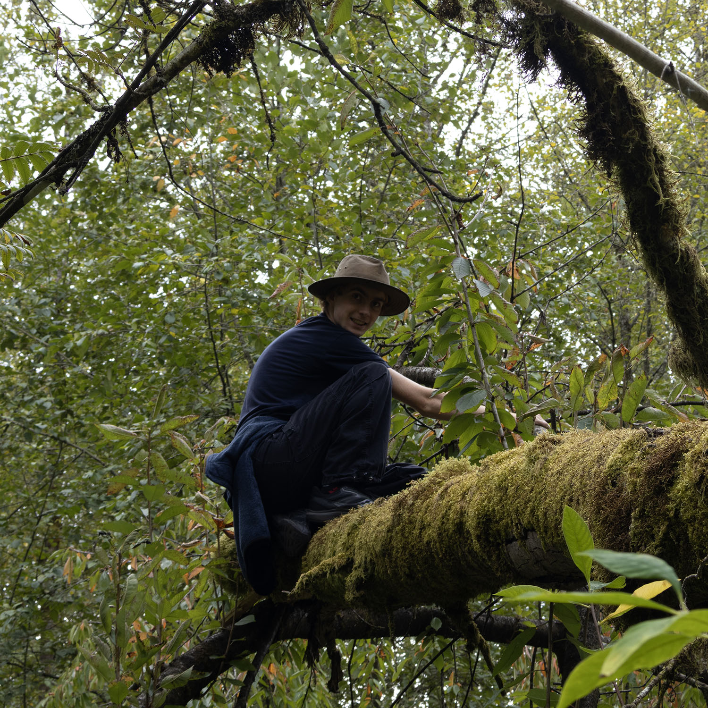

about benjamin
Benjamin Kimberley is a peculiar specimen of humanity who partakes in a wide variety of activities such as book reading, music making, game designing, picture drawing, and rolling down large grassy hills. He subsists on a diet of apples, cucumbers, and scotch mints (not to mention carrots, cucumbers, and peppers).
